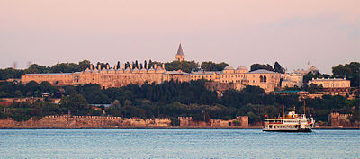
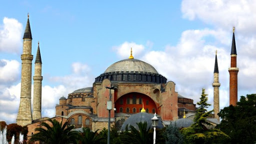

Istanbul je središte turske privrede, čemu doprinosi povoljan geografski položaj. Zbog svog strateškog položaja Istanbul je imao važno mesto u istoriji u poslednjih 2000 godina. On je mesto mešanja raznih kultura i religija, te zbog toga u gradu možemo videti mnoštvo istorijskih džamija, crkava, sinagoga i palata. Zato je istorijsko središte Istanbula 1985. godine upisano na UNESCO-v popis mesta svetske baštine u Evropi. Istanbul, koji je izgrađen na principu "kultura zajedničkog življenja", koji poseduje neograničen broj dela koja su okarakterisana isprepletanim umetničkim osobinama i koji je domaćin mnogim kulturno-istorijskim spomenicima, sa svojom neprikosnovenom prirodnom lepotom je grad koji sa svim ovim elementima postoji i koji ga čine onim što jeste ustvari. Istanbul je jedan od tri glavna evropska grada kulture za 2010. godinu i to pre svega zbog njegove viševekovne istorije i savremene umetnosti. Sa druge strane, trebalo bi poboljšati položaj manjina u tom gradu.
Najpoznatiji muzeji u Istanbulu su Topkapı Sarayı(bivša Sultanova palata ili Carigradski dvor), Aja Sofija, Crkva Hora, Arheološki muzej, Muzej turske i islamske umjetnosti, Istanbulski muzej moderne umjetnosti i Dolmabahçe Sarayı. Mnoge pomoćne zgrade raznih džamija su pretvorene u muzeje, te pružaju impresivan dojam osmanskog razdoblja.
 Kao iskaz vjere, sultani, veziri i mnogi drugi osmanski moćnici, su obično bogato financirali izgradnju džamija. Veliki broj đžamija su građene po uzoru na Aju Sofiju. Oko prostorije za molitvu je obično izgrađen kružni dvorišni prostor (sprskohrvatski turcizam: avlija, turski: avlu), te je obično izgrađen i külliye zajedno sa medresom, koja je npr. korištena kao osnovna škola (mektep), teološka ili liječnička škola sa prostorom za stanovanje (hücre), bolnica (dar-üş-şifa), hospicij (tabhane), pučka kuhinja (imaret), knjižnica (kütüphane), prenoćište (srpskohrvatski turcizam: karavansaraj, turski: kervansaray), kupelji (hamam), grobnice (türbe), a ponekad je građen i obzervatorij za kalendarske izračune, vezane uz religiju (muvakkithane).
Tipične džamije ovog razdoblja su:
Izvori: wikipedija.org,sites.google.com,funtravelnis.rs